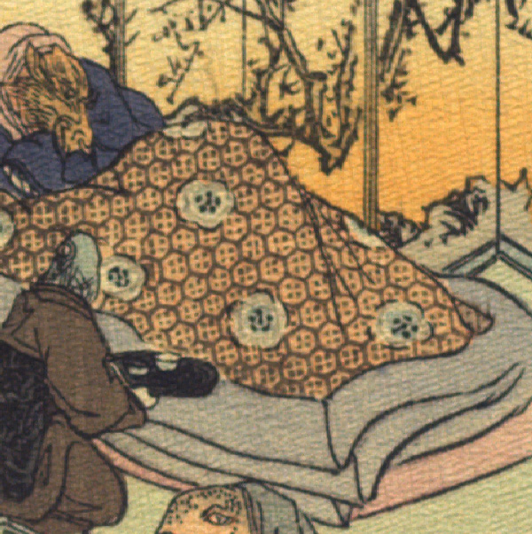

竜王。肌は黄色く、前に突き出した口元に長いひげが生えている。額に短い角のようなものが見える。青い着物をまとい、布団をかけて横たわっている。背後に屏風が立っている。
著作者：J.Dautremer／出典：親書誌：U426_nichibunken_0107：La meduse simple et naïve／日付：2006／資源識別子：U426_nichibunken_0107_0003_0001
Copyright (c)2010- International Research Center for Japanese Studies, Kyoto, Japan. All rights reserved.